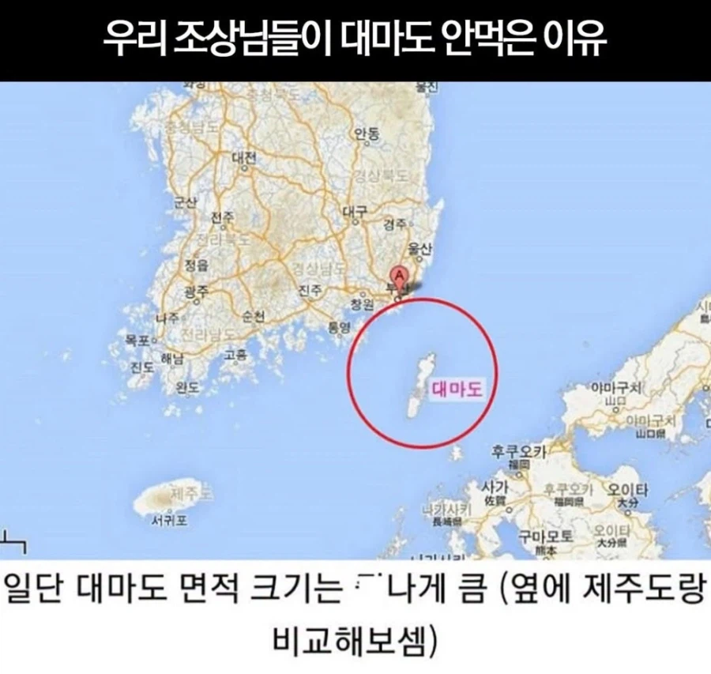
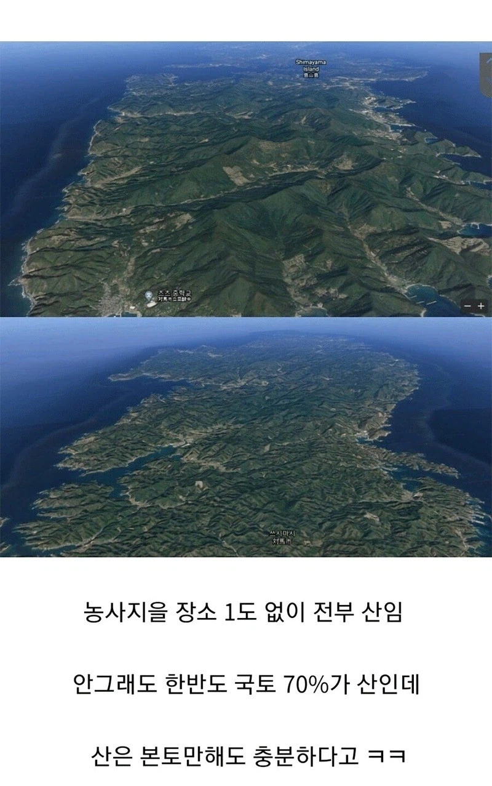

1줄 요약: 개똥땅


1줄 요약: 개똥땅
아닌데 고스트 오브 쓰시마에는 존나 풍요롭고 아름다운 땅으로 나왔는데. 막 말 타고 평원을 달리면 갈대가 흩날리고 황금색 새도 날아다니고 무릉도원이 따로 없던데?
야생 몽골인 돌아다니는거 잊음?
위험한 곳임
야생 몽골인 ㅋㅋㅋㅋㅋㅋ
대마도에서 카메라줌당겨서 보면 부산빌딩들보이던데
혹시 일본인이신가요?
날 좋으면 광안대교에서도 대마도가 보입니다
영해 때문에 가지있어야지 독도는 왜 가지고있냐
독도는 빈 섬이었다가 어업용으로 썼지만 대마도는 해적소굴이라
원래도 왜1놈들 해적인데다 조선화시키려면 주민도 보내야하고
식량자립이 안되서 매달 식량 보내주고 관리도 보내서 관리해야하는데
조선시대에 그만한 수고를 들이고 얻을만한 가치가 없었잖아
예전에는 가지는게 더리스크가 컸나봄
조선시대엔 관리가 너무 안되서 있는 섬도 버리려고했음
당시는 그런 개념이 없었으니
그시절엔 영해의 개념이 희박했으니까
영해의 개념이 없던 시절아님?
한일 공동으로 흉악범 가두는 섬으로 협정맺고
땅 개간해서 반땅하면 좋겠다
뭐 아일랜드임? ㅋㅋㅋ
미친 소리하는 일뽕들 많네. 일뽕위키로 역사 배웠냐? 애초에 조선의 대마도정벌 전략 목표가 대마도 조져서 왜구 숫자 줄이기임. 근데 대마도 왜 안먹었냐고 지랄을하면서 패배했다고 지랄지랄. 이새끼들은 걸프전이랑 후세인 모가지 땄어도 이라크가 미국에 편입안됐다고 미국이 졌달 새끼들임. 독일은 왜 미국이나 영국이나 하다못해 러시아땅 아니냐? 히틀러가 이겼는갑네.
첨부터 병신소리라서 세부적인 얘긴 더 하고 싶지도 않지만 그놈의 패배소리는 시발. 2만명쯤가서 사상자 2백명내고 대마도 죄다 박살내놓고 대마도있던 애들 겨우 게릴라전이나 하던 중인데ㅋㅋㅋ니들 논리대로면 임진왜란 초기때 조선의병 및 조선군 게릴라로 일본군 피해입혔으니 이미 임란초기때부터 일본군은 육지에서 대패중이었겠네? 미친 시발 후세인 문화승리하는 소리하고 자빠졌다 진짜.
이종무의 처벌에 대해서도 할말이없다. 이종무가 논란이 있긴한데 뭔 처벌을 왜 받았는지도 모르냐? 하긴 시발 이라크가 미국땅 아니라고 후세인이 승리했다는 논리 수준인 새끼들이랑 뭔 말을 더 하냐. 차라리 니뽄새끼들이 대마도정벌군 10%쳐죽이고 승리했다고 우기는 게 더 들어줄만할듯.
맞는말해도 발ㅈ하듯 말하니까 참 보기싫구나. 메모.
그 세대 그 짝이라 그럼
심지어 추천수도 봐
왤케 풀발함?
비아그라 먹었대
득보다 실이 많은 땅이라서 굳이 지배 안했음. 지금에서야 과학기술이 발전해서 사람이 살기 좋아졌으니 영토니 영해니 할수 있지만 중세 조선때는 가져봤자 의미도 없는 땅이었음
궁금한게 득이 많은 땅이였음 먹고 유지할 수 있었을까? 일본도 가만히 안있었을테니까 힘들었겠지? 쥰내 아깝다 우리땅이였음 영해 존나 커지는건데
일본도 집안싸움하느라 신경쓰기 힘들었을수 있음
오히려 지형이 우리랑 가깝노
고스트 오브 쓰시마에선 평야갸 많았는데
그러게 오히려 요테이가 똥땅이고 고오쓰에서는 저기 한군데도 안빼고 다돌아다녔는데ㅋㅋ
우리나라는 기본적으로 공도정책이라 섬쪽은 신경안썻음
하물며 대마도같은 섬이야 신경을 쓰겟나
그럼 독도는머야
울릉도랑묶여서 그래도 특산품 바치던 섬
vs 해적섬
울릉도도 기본적으론 비워뒀음.
몰래 들어가서 사는 백성(세금회피), 왜구 문제로 정기적으로 관리를 파견했다 정도
독도도 버린 섬에 일반인이 지맘대로 관복입고 일본가서 이거 우리땅이니까 꺼지라 시전해서 지켰지 조정에서 뭘 한적없음.
지금이야 산 깎아서 간척지 만들고 하면 괜찮을듯
전형적인 리아스식 침강해안이라 해안선도 지랄맞음....
산지 투성이에다가 해안선이 개복잡해서 전근대 해적들이 숨긴 딱 좋았지
싹 깍아서 공군 해군 기지 만들거나
발전소 재생에너지 등등 기피시설 몰빵하면 좋을듯?
그럼 현재는 어업,관광이 주 수입원인가?
그럼 독도는??
울릉도가 원래부터 조선 땅이라 정복할 수고가 없었음
기본적으로 조선은 계속 울릉도를 비워뒀음. 관리하기 빡세서
저때 해양주권이라든가 영해개념이 제대로 박혀있었다면 소수라도 군대랑 거류민을 두고
관리했을텐데 .. 아까움 ...
전부 산이면 아포칼립스용 지하벙커 짓긴 좋지 않...아니 그런거 지을 화강암반 산은 한국도 일본도 진뜩 있군...
부산 불꽃축제하면 대마도에서 꽤 보인다던데
쓸모 없는 땅이라는 소리는 그냥 정신승리임 ㅋㅋㅋㅋㅋㅋㅋ
효용은 적은데 관리난이도가 개빡세니까
평지도 농사짓기 안 좋은 땅이라고 봤었는데